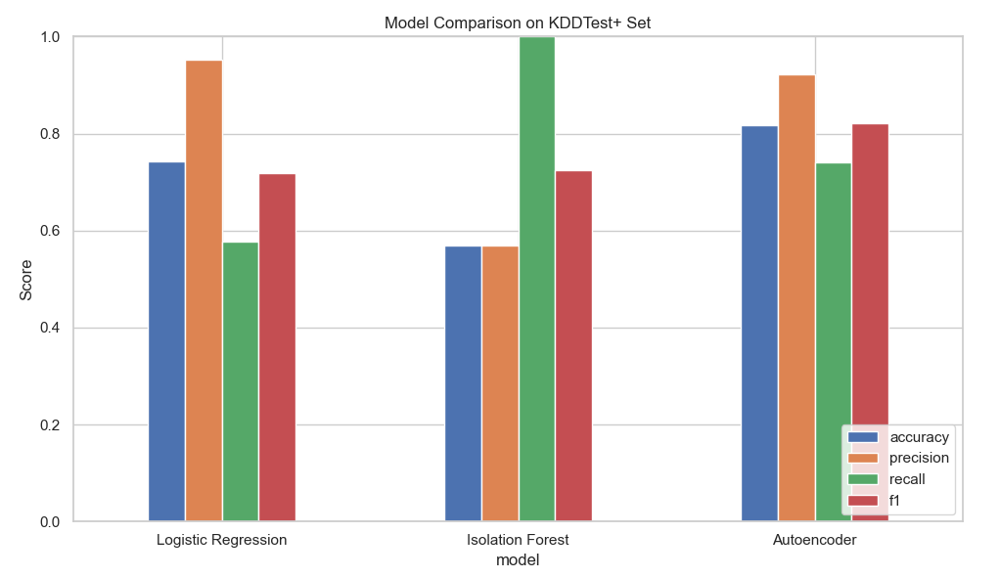

by Veronica Scerra
Exploring classic and deep learning methods for detecting network intrusion anomalies using the NSL-KDD dataset.
For my first foray into anomaly detection methods, I wanted to use a dataset that was well-known and well-understood. The reasons for this were two-fold: 1) a well-established dataset is likely to be clean, well-structured, and easy to find and work with, and when you’re jumping into something for the first time, it’s best to go with a stress-less dataset so that you can focus on the modeling, and 2) if a dataset is frequently cited and used, it means that there is likely to be a lot more help and guidance available online in places like Kaggle if you get stuck. For those reasons, and because I found the problem interesting, I chose the NSL-KDD dataset for my first project.
The NSL-KDD dataset is an improved version of the original KDD Cup 1999 dataset, it consists of labeled network traffic data and is used to identify malicious activity in network connections, such as denial of service (DoS) attacks, port scanning, user-to-root attacks, or unauthorized remote logins. The goal of this project was to identify malicious activity (or what we might call anomalous activity) using supervised, unsupervised, and deep-learning methods. For my own edification, I wanted to see how these methods compare when using classic dataset.
I will say here that I know next to nothing about network intrusion attacks generally, which added a layer of uncertainty to my assessment of this dataset. Coming from the academic research side of data science, I have been used to having complete and strict control over my datasets. I got to say what was collected, when, and how it was going to be transformed, translated, and used to reach my conclusions. I had principled and well-thought-out reasoning for all of my variables. Stepping into the broader world of data science means not having the kind of intimate understanding of the data that you might have if you’d spent all of your working and waking hours thinking about it. That being said, diving into designing a model without any understanding of what your dataset contains is foolishness.
Every effective data model begins with some understanding of the data. As a first step after downloading the dataset, I normalized the data using a standard scaler, removed any variables with variance below a defined threshold, removed variables that were highly correlated with others, and used a label encoder for categorical variables. I was next surprised to find that in this dataset anomalous events account for over 45% of the records. This is a larger proportion than I expect, as anomalies are usually presumed to be rare, but recall that in this dataset, multiple types of malicious attacks are grouped together in the anomalous category. The second surprise from this dataset was a lack of missing values - hooray for cleaned data! Looking at class-based summary statistics for the data, I was pleased to see that the mean values for several variables were markedly different between normal and anomalous events, inspiring high hopes of a clear separability with the models.
Given that I had a large labeled dataset, with adequate representation of both anomalous and normal (binary) classes, I chose a straightforward logistic regression as a first model. Logistic regression is a supervised (i.e., you have the answers available) statistical model that models the log-odds of an event as the linear combination of the input variables. Classic, simple, easy. In this instance, the logistic regression model returned pretty decent results when applied to the test set, with an F1 score of .719. If all I wanted was a decent model to help me identify anomalies in this dataset, this would likely work just fine.
I didn’t just want to identify anomalies in this dataset, I wanted to explore model options to get a better sense of their utility, so I kept going with an unsupervised Isolation Forest (IF) model. Isolation Forest is a tree-based ensemble method that isolates observations by randomly selecting features and values on which to split those features. The “forest” in this case is the splitting of variables along values to create branches of like features - those observations that are isolated earlier in the branches tend to be anomalous, as in, they don’t fit in well with the rest of the data. I started with a low contamination value (contamination represents the percentage of your dataset presumed to be anomalous), but even when contamination was set to 0.4 (40% of observations), the best result I could get with the unsupervised IF model was an F1 of 0.725 on the test set. Now, in the event that we didn’t have access to the labels, and we were truly in an unsupervised scenario, would this be better than nothing? Sure, but why settle for that when you have the option to go deeper, as in deep learning!
The advent of widely available deep learning libraries like Tensorflow and Keras make the construction of deep learning models easy and accessible, even with the modest compute available on a laptop. An autoencoder takes in data, uses neural networks to reconstruct that data, and flags as anomalies those records with high reconstruction error. For this study, I used a dense encoder with rectified linear unit (ReLU) activation, a batch normalization layer, and a dense bottleneck layer. The decoder is essentially the encoder in reverse - a dense ReLU layer, batch normalization, and a dense output layer with linear activation. Gradient descent was implemented with the Adam (adaptive learning rate) optimizer, and loss was measured by mean squared error (MSE). To optimize results, I tested many thresholds via percentile cutoffs from reconstruction loss, and found the best threshold to be the 55th percentile. Performance with this model was highly sensitive to threshold, emphasizing the importance of tuning for the use case. Luckily, the reconstruction error revealed a clear separation between normal and anomalous instances, making the percentile-based thresholding very effective. With the dense autoencoder and thresholding, I was able to get an F1 of 0.822 on the test set - even better than the logistic regression and IF models.
Is it worth it to mess around with traditional models when deep learning is available? Yes, I would argue that it is. First of all, traditional methods can give you a fast and interpretable benchmark. They can help answer the question: “Is deep learning even necessary for this problem”, and sometimes the answer is “NO”. Traditional methods also give you the opportunity for low-cost experimentation (even with large datasets), they are easy to tune, and they work well when the feature space is clean and anomalies are sparse.
The value of exploring thresholds. The threshold in this case is the reconstruction error above which flags an “anomaly” classification. If you set your threshold to 95%, for example, you’re asking your program to flag the top 5% of reconstruction errors as anomalous. In a dataset with 45% anomalies, this will only bring you grief. Don’t get it twisted, though - the threshold doesn’t reflect how many anomalies exist because your model doesn’t know which points are actually anomalies. Rather, the threshold reflects how anomalous your anomalies are. The threshold reflects how different, or strong the anomalies are, relative to normal data. Thus, if your anomalies are subtle, and overlap normal data, you might need a relatively low threshold to boost your metrics. If your anomalies are distinct and extreme, a high threshold will find them and reduce false positives. The 55% threshold used for the autoencoder model in this project suggests that the anomalies are subtle, and likely so due to the collection of different kinds of anomalous attacks in the “anomaly” category, collapsing across differences that might occur between types of malicious activity.